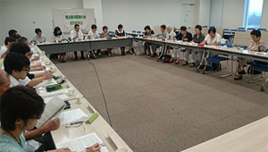

第52回埼玉県消費者大会実行委員会
8月18日(木)13時30分より、浦和コミュニティセンター第15集会室にて第5回実行委員会が開催され、25人(19団体)事務局2人が出席しました。
【議題】
1．第4回実行委員会報告(修正・追加の確認を含む)
事務局より、第4回実行委員会報告と検討スケジュール報告を行い、確認しました。
2．基調報告について
この間の実行委員会での意見・FAXなどでの意見集約の内容をもとに修正した、基調報告文章の提案、話し合いを行い、確認しました。
3．大会アピールについて
この間の実行委員会での意見・FAXなどでの意見集約の内容をもとに修正した、大会アピール文の提案、話し合いを行い、確認しました。
4．埼玉県に提出する要請文について
埼玉県に提出する要請文について意見交換を行い、基調報告の内容から今大会において重点をおくべき項目や、引き続き要請が必要な項目などを出し合いました。今回の実行委員会での意見交換、FAXなどでの意見集約の内容をもとに要請文を作成し、次回実行委員会で確認することになりました。なお、意見交換の中では、地震に備える耐震診断の充実、農作物の高温障害対策の充実などがあがりました。
5．大会当日に向けた準備について
全体会スケジュール、スタッフの集合時間、登壇者の確認、参加者の予測、お弁当の注文方法などを確認しました。
6．分科会について
第4回実行委員会での分科会の話し合いをまとめた文章で全体の進捗を確認後、映画・社会保障・食・消費者課題の4つのテーマにわかれて話し合い、各分科会のテーマが次のように決定しました。
 食の安全
食の安全- 「いま、どうなっているの『食の安全』」
 消費者課題
消費者課題- 「スマホを知ろう～使い方しだいでトラブル回避～」
 社会保障
社会保障- 「こころ豊かにくらすために私たちができること～貧困問題を考える～」
 映画
映画- 「認知症の正しい理解をすすめるための映画上映『徘徊 ママリン87歳の夏』」
7．お知らせ
｢あなたのカード情報、大丈夫？～不正使用の現状と対策～｣8月29日(月)10時～
浦和コミュニティセンター第13集会室
8．次回実行委員会
9月23日(金)13時30分～浦和コミュニティセンター第15集会室